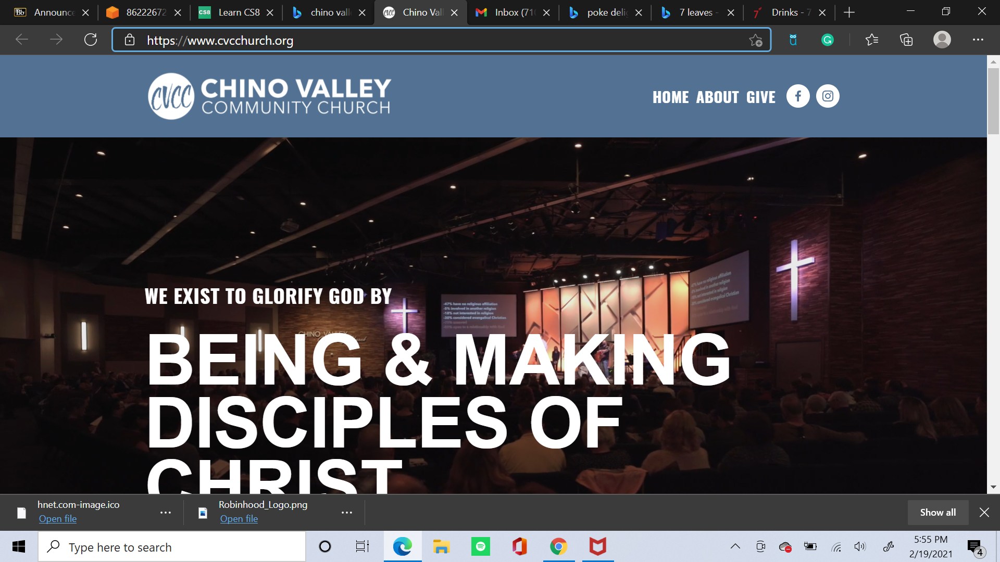
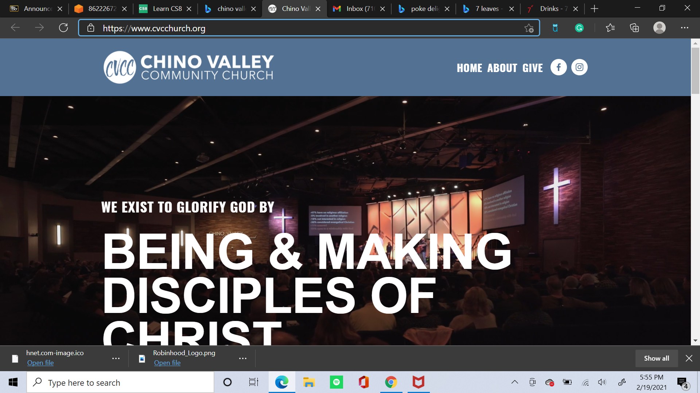
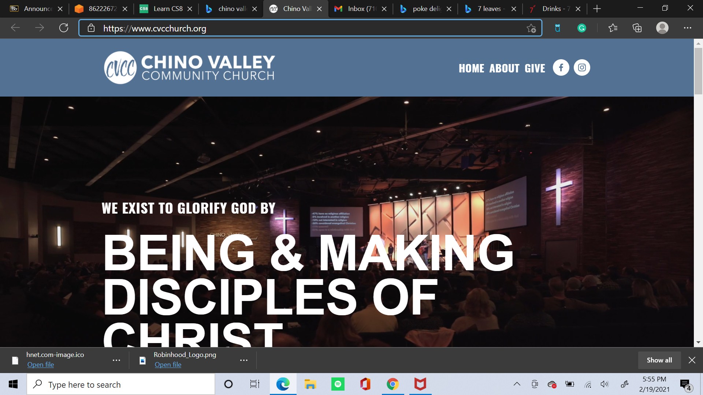

Gene Feng, Boba Worker
Hello, my name is Gene Feng. I currently am a Freshman at the University of California, Riverside. I really enjoy my education here and I plan on graduating early if it is possible. I am currently trying to finish Pre business at the moment. I took a lot of AP classes, which means I have a lot of credit for my classes already. I want to graduate in less than 4 years so I can get college over it. I am planning to major in Business Information Systems. I fnd computers very interesting and I also really enjoy business.
I was born and raised in a city called Chino Hills located in California. My whole life I have been a very energetic and happy person when growing up. I absolutely enjoyed school, especially elementary school. As I grew older, I realized how important my future is. When I turned 16, I got my first job as poke worker. This taught me responsibility, determination, and hard work. As the years passed, I got another poke job, and then I am currently working at a boba shop called 7 Leaves. I am basically a full time student, while also working a part time job.
Finally, on my free time, I love playing guitar and working out. I used ti play basketball but I now work out constantly. I am currently trying to get back into shape, especially for the summer. I love playing guitar because it taught me patience and to never give up. It really showed me how much I love music and realize how much music can change a persons life. Aside from guitar, I also love the stock market. Currently I am focusing on my future by investing as much as possible in order to be finacially secure in my future. I am very responsible with my money, and I also work very hard.
Experience
Church Volunteer
• Taught Kids about Jesus
• Did VBS
• Worship
• Bible Study
Education
UC Riverside
University of California Riverside
University of California Riverside
Portfolio
 


